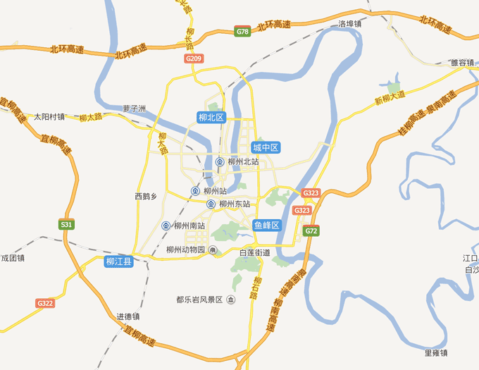
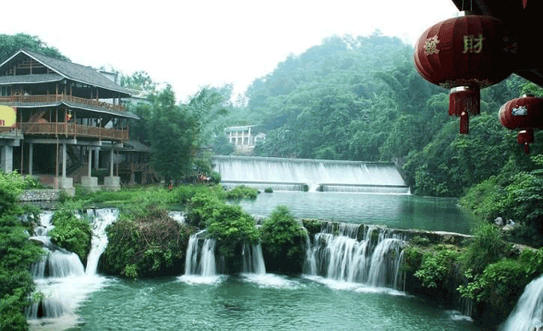
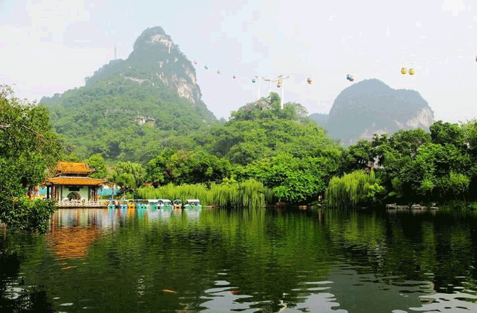
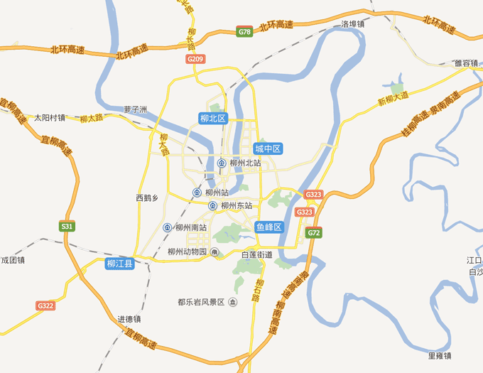
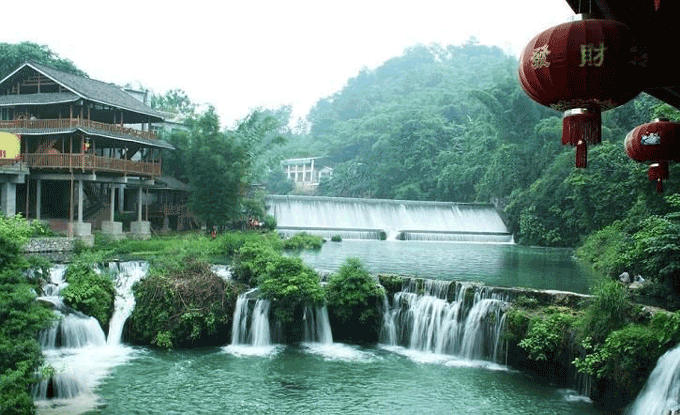
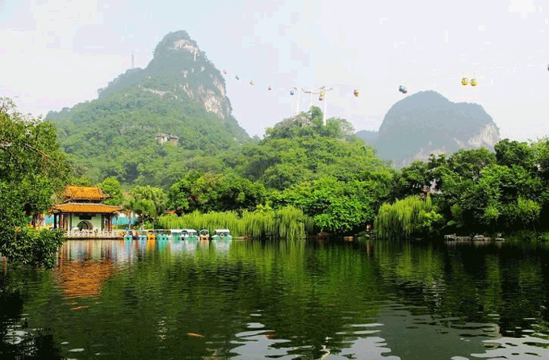

家乡之美
作者:梁耐松 发布时间:2015/1/12 清爽阅读模式
柳州（壮文：Liuj couh）柳州位于广西中北部，地形为“三江四合，抱城如壶”，故称“壶城”。又叫龙城，因城里每一个人都是龙的传人，从建城至今已有两千一百多年的历史。
作为广西壮族自治区最大的工业城市，有着山清水秀地干净的美誉。工业比例在广西首位，占广西总工业1/4。柳州的民族风情独具神韵，壮族的歌、瑶族的舞、苗族的节和侗族的楼，堪称柳州“民族风情四绝”。

柳州市旅游资源丰富，与桂林市临毗，是广西拥有第二多国家级A级景区的城市，旅游人口和收入列广西第三位，是区内重要的旅游目的地，有着广西唯一两个国家级重点公园——柳侯公园和龙潭公园。市内有着众多优质旅游资源：百里柳江（北岸河堤，江滨公园，蟠龙山公园，人工瀑布群，音乐喷泉，东堤春晓，西来寺等景区一道组成的）， 立鱼峰景区，柳州博物馆，工业博物馆，军事博物馆，柳州奇石馆，雀儿山景区，鹅山公园，三门江森林公园，都乐岩风景区，柳州水上运动中心，河西花卉公园，马鹿山公园，箭盘山公园等。三江侗族自治县和融水苗族自治县以及融安县是柳州市重点旅游县，旅游资源丰富，有国家A级以上众多景区，如： 石门仙湖景区，贝江景区，大侗寨景区，程阳风雨桥，马胖鼓楼，丹洲古镇，中渡古镇，香桥岩等旅游资源。

柳州市区地形平坦，微有起伏，海拔在海拔85至105米之间，东、西、北三面环山，具有典型的岩溶地貌特征。由于柳江穿流市区及气候、岩性、构造的影响，形成河流阶地地貌、岩溶地貌迭加的天然盆地。 柳江自北向南绕呈半岛形的柳北半岛，又向北，向东北又绕行向西南，最后向东南流出，故柳北半岛素有“世界第一盆景”的美誉。山峰点缀于城市之间，著名的有鱼峰山，马鞍山，鹅山，箭盘山，文笔峰，雀儿山等。城南有都乐岩，为喀斯特地貌溶洞典型。

柳州城市的山水紧密连接在一起，充满浪漫气息，这种山水结合如此完美的城市在世界上很难找得到，这是一种机缘，也是一种责任 。——新加坡“规划之父”刘太格教授。
作为广西壮族自治区最大的工业城市，有着山清水秀地干净的美誉。工业比例在广西首位，占广西总工业1/4。柳州的民族风情独具神韵，壮族的歌、瑶族的舞、苗族的节和侗族的楼，堪称柳州“民族风情四绝”。

柳州市旅游资源丰富，与桂林市临毗，是广西拥有第二多国家级A级景区的城市，旅游人口和收入列广西第三位，是区内重要的旅游目的地，有着广西唯一两个国家级重点公园——柳侯公园和龙潭公园。市内有着众多优质旅游资源：百里柳江（北岸河堤，江滨公园，蟠龙山公园，人工瀑布群，音乐喷泉，东堤春晓，西来寺等景区一道组成的）， 立鱼峰景区，柳州博物馆，工业博物馆，军事博物馆，柳州奇石馆，雀儿山景区，鹅山公园，三门江森林公园，都乐岩风景区，柳州水上运动中心，河西花卉公园，马鹿山公园，箭盘山公园等。三江侗族自治县和融水苗族自治县以及融安县是柳州市重点旅游县，旅游资源丰富，有国家A级以上众多景区，如： 石门仙湖景区，贝江景区，大侗寨景区，程阳风雨桥，马胖鼓楼，丹洲古镇，中渡古镇，香桥岩等旅游资源。

柳州市区地形平坦，微有起伏，海拔在海拔85至105米之间，东、西、北三面环山，具有典型的岩溶地貌特征。由于柳江穿流市区及气候、岩性、构造的影响，形成河流阶地地貌、岩溶地貌迭加的天然盆地。 柳江自北向南绕呈半岛形的柳北半岛，又向北，向东北又绕行向西南，最后向东南流出，故柳北半岛素有“世界第一盆景”的美誉。山峰点缀于城市之间，著名的有鱼峰山，马鞍山，鹅山，箭盘山，文笔峰，雀儿山等。城南有都乐岩，为喀斯特地貌溶洞典型。

柳州城市的山水紧密连接在一起，充满浪漫气息，这种山水结合如此完美的城市在世界上很难找得到，这是一种机缘，也是一种责任 。——新加坡“规划之父”刘太格教授。